🤍 Наша команда
Тренери, які поділяють один підхід: уважність до тіла, зрозуміла методика і тепла підтримка
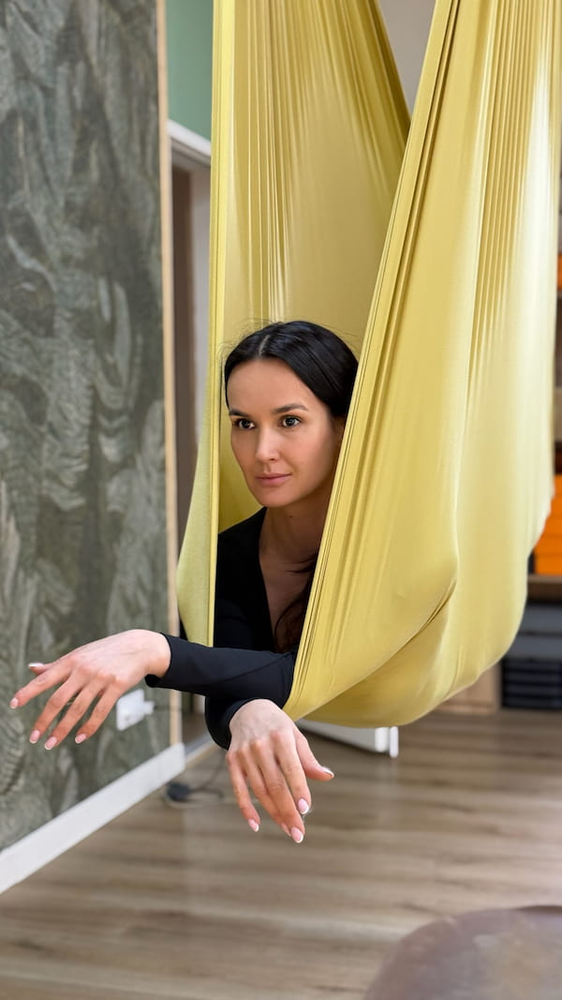
🌿 Про підхід:
Засновниця та керівниця ERRA SPACE. Для Альони йога — це не лише практика на килимку, а те, що проходить крізь кожен момент життя. Через тіло ми вчимося керувати увагою, думками та станом.
🪁 Флай-йога:
Відчуття опори та легкості одночасно — декомпресія, мобільність і сила без тиску на тіло. Особлива увага безпеці у гамаку, правильним підводкам і відбудові.
👩🏫 Також навчає викладачів:
Передає методику, логіку побудови занять і принципи безпечної роботи з групою.
✨ У практиці:
Відбудова асан, пранаяма, робота з диханням, м'яка стабілізація корпусу, фокус і внутрішній спокій.
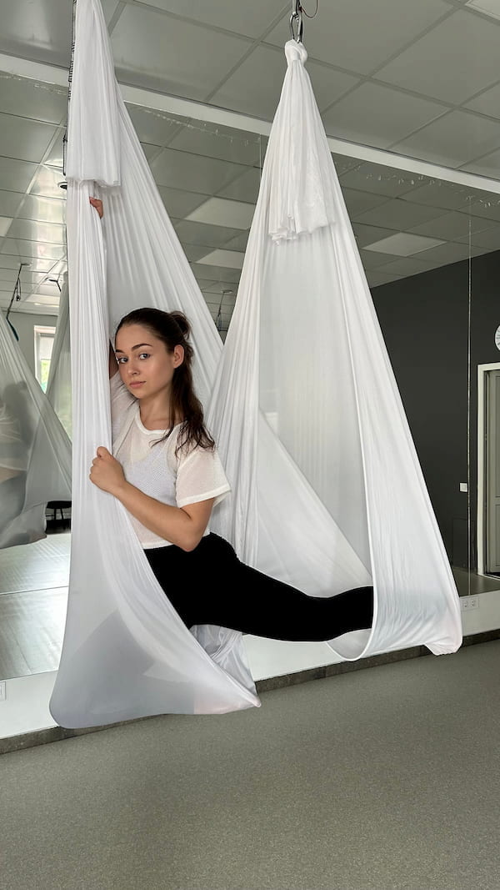
📌 4 принципи роботи:
Індивідуальний підхід до кожної дитини · дисципліна як основа продуктивності · командна робота · здоров'я через рух.
🤝 Підхід до дітей:
Знає, як допомогти дитині повірити в себе. Коли дитина боїться нового елементу — підтримує, дає впевненість і радіє разом із нею першим досягненням.
🎯 Результат:
Переконана: після першого місяця тренувань — перші результати, помітні і дитині, і батькам.
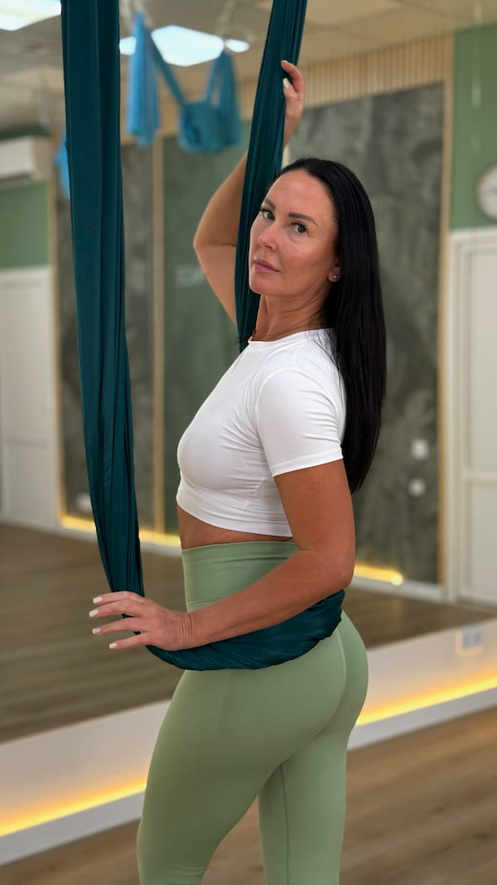
🌿 Про підхід:
В команді ERRA SPACE майже з відкриття студії. Поєднує пілатес і флай-напрямки: сила без перенапруги, стабілізація центру, мобільність і контроль дихання.
🎯 Головний принцип:
Не «терпіти», а чути тіло — працювати поступово й якісно. Підходить тим, хто хоче тренування з увагою до деталей і м'яким прогресом.
📜 Кваліфікація:
Флай-йога (авт. курс Альони Єрохіної) · пілатес (Анна Ковтун) · функціональні тренування (Академія Фітнесу-Україна) · флай-пілатес (FGEGM).
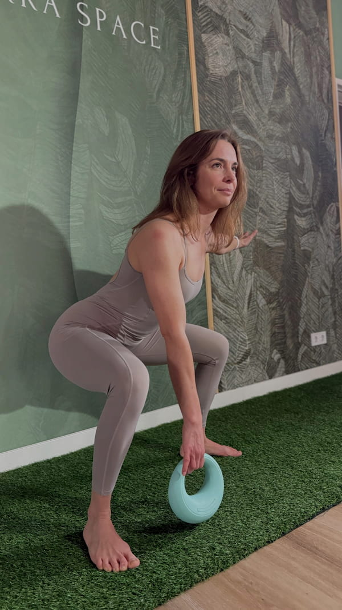
📌 Спеціалізація:
Сертифікований тренер з функціонального тренування. Фокус — на природних, багатосуглобових рухах, які допомагають тілу гармонійно функціонувати у реальному житті.
👤 Для кого:
Тягне ногу, болить спина або важко підніматися сходами — Яна знає, що робити.
✨ Формат:
Функціональне тренування зі стретчингом — для міцності, рухливості та легкості щодня.
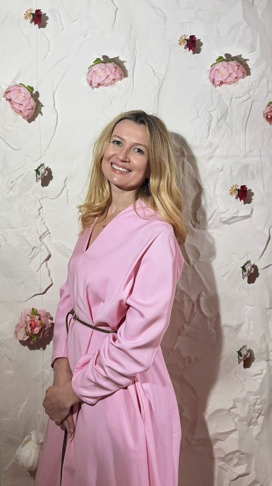
📖 Досвід:
Понад 5 років викладає йогу, 3 роки — пілатес, 14 років особистої практики.
📌 Методика:
Поєднує йогу Айенгара, йогатерапію та пілатес з принципами методів Франкліна і Фельденкрайза.
👤 Для кого:
Біль або обмеження рухливості · відновлення після травм · бажання рухатися розумніше, а не інтенсивніше.
🎯 Головна мета:
Безпека і відсутність болю. Якість руху важливіша за складність.
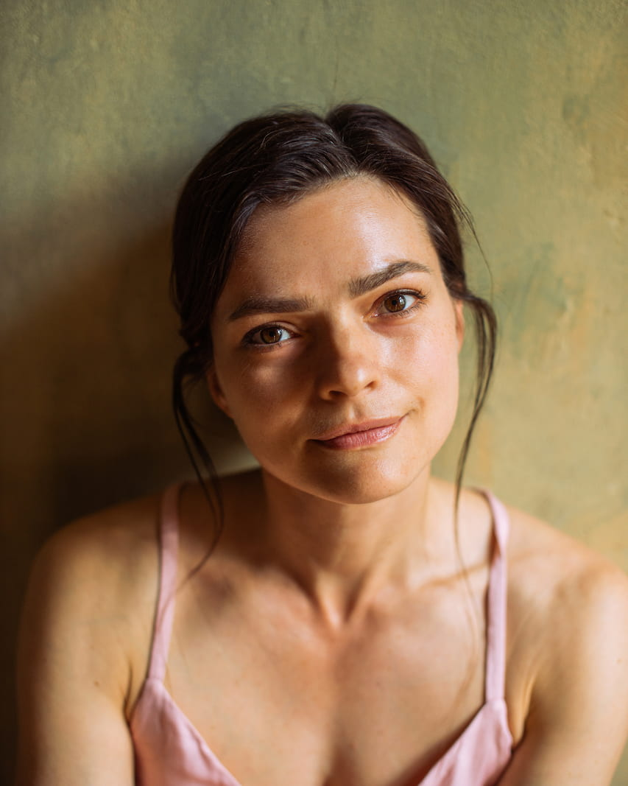
🌿 Про напрям:
Сертифікований викладач за методикою Ішвара йоги. Практикує понад шість років. Ішвара — це йога внутрішньої цілісності.
📌 На заняттях:
Відлаштовує злагоджену роботу м'язів, приділяє велику увагу глибоким м'язам спини та рухливості кульшових суглобів.
🎯 Головна мета:
Позбавити від напруги зовнішніх м'язів, відчути легкість у спині та знайти внутрішній баланс у всьому тілі.
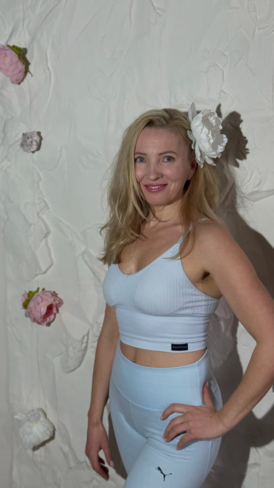
🔥 Про напрям:
Тренер з ADHOyoga — напрям, що поєднує гнучкість і силу, статику й динаміку, дихання та медитацію. Веде групові, онлайн та персональні заняття.
📌 На тренуваннях:
Будує правильну техніку (положення таза, ребер, плечей, стоп), поєднує рух із диханням. Адаптує практику під рівень: варіанти для початківців і прогресії для досвідченіших.
🎯 Фокус:
На відчуттях тіла — без болю і без «терпіти».
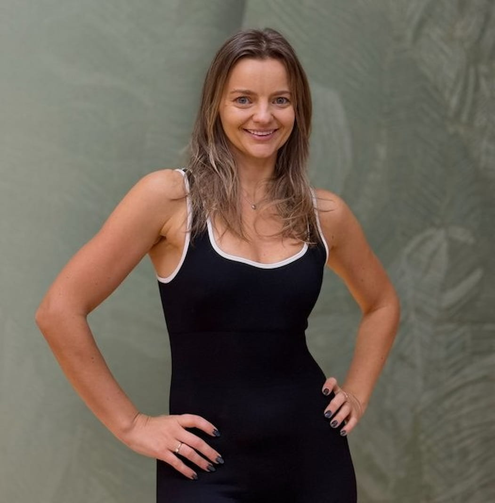
📌 Спеціалізація:
Функціональні тренування та заняття «Здорова спина» для людей будь-якого віку й рівня підготовки. Допомагає не лише покращити фізичну форму, а й краще відчувати своє тіло, зміцнити спину, поставу та рухатись без дискомфорту.
🎯 Підхід:
Поєднує ефективні вправи, зрозуміле пояснення техніки та уважний підхід до кожного. Важливо, щоб людина тренувалась у комфортному темпі — без перевантаження, але з відчутним результатом.
✨ Філософія:
Вірить, що регулярний рух, правильна техніка та турбота про тіло — це основа здоров'я, гарного самопочуття й енергії щодня.
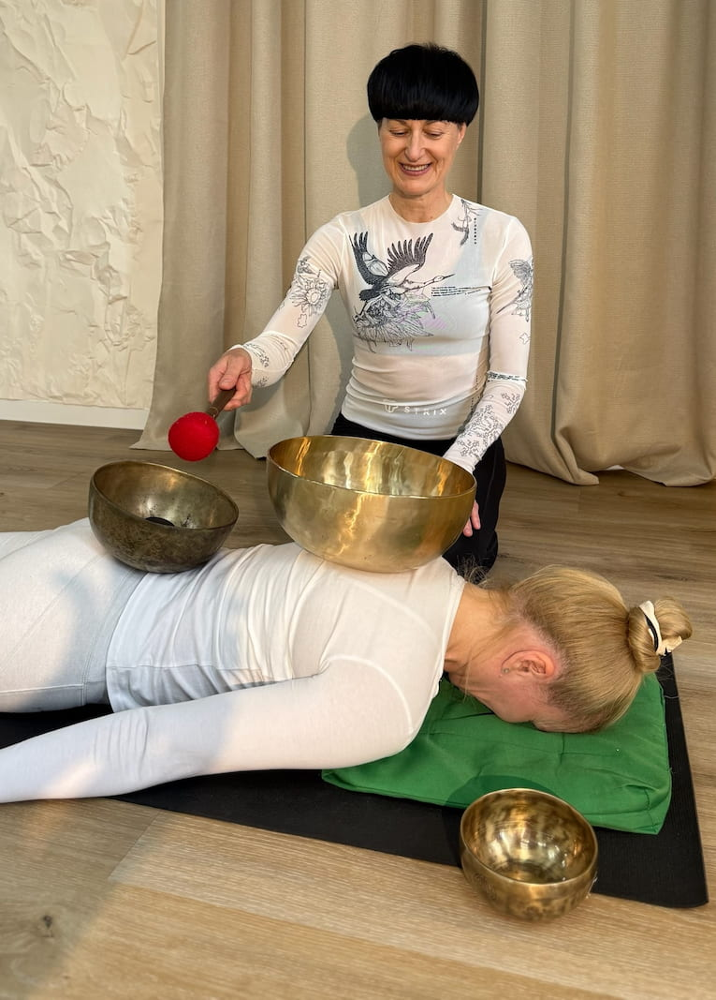
📌 Спеціалізація:
Сертифікований тренер з флай-йоги та сертифікований звукотерапевт. Переносить асани з килимка в гамак, додає елементи пілатесу і акробатики.
🎯 Підхід:
Навчає відчувати своє тіло, цінувати процес та практикувати без тиску й порівнянь. Особливу увагу приділяє шавасані — саме тут тіло засвоює практику.
🎵 Також проводить:
Групову та індивідуальну звукотерапію, контактний та безконтактний масаж чашами.
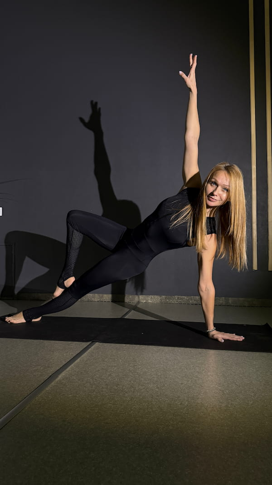
🌿 Шлях до йоги:
Почала через вивчення астрології, нумерології і психосоматики. Зрозуміла що знань мало — і почала вивчати як через роботу з тілом можна вплинути на фізичний та емоційний стан.
📖 Досвід:
20 років практики і навчання. Йога стала відповіддю на багато питань і способом життя.
🎯 Мета:
Поділитись знаннями і досвідом з людьми, які цього потребують. Бо рух, усвідомленість і турбота про себе — це основа щасливого і здорового життя.
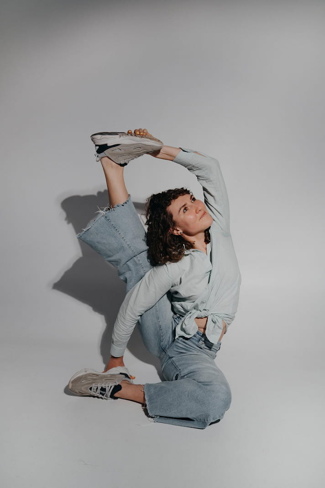
🌿 Про підхід:
Заняття Ані — це про усвідомлений рух, відновлення балансу тіла та покращення якості життя через пілатес. Основний фокус — постава, глибокі м'язи, зменшення напруги та безпечна робота з тілом.
🎯 Результати клієнтів:
Зменшення болю у спині та шиї, покращення рухливості, фізичних показників і загального самопочуття.
✨ Підхід:
Уважний, спокійний і дуже індивідуальний. Кожне заняття адаптується під людину, її стан і можливості — з акцентом на безпеку та результат.